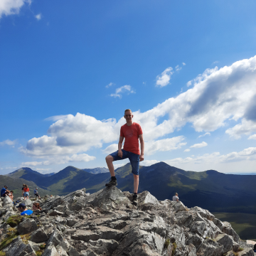
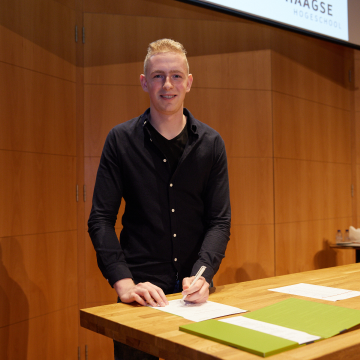
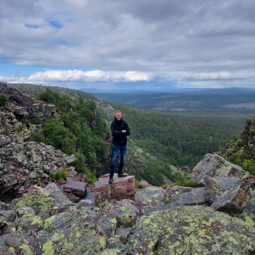

I have experience with
-
Research
4 years of experience Qualitative interviews Desk research Diary studies Field research Customer Journeys Competition Analysis Target group research Etc.
Concepting
4 years of experience Concept Scenario’s Moodboards Giving presentations Etc.
Testing
4 years of experience A/B testing Observing Heuristic Evaluation Usability tests Etc.
-
Design
Figma & Sketch 4 years Adobe Photoshop & Illustrator 2 years Miro 2 year Adobe Lightroom 0.5 year Axure 0.5 year Zeplin 1 year Overflow 0.5 year
Front-End Dev.
Sublime 2 years Webflow 0.5 year
Extra
Adobe Premiere Pro 1.5 years Work experience @companies 1.5 years
Hobbies
Hobbies
I love it to watch movies, series and I’d like to play some games. This is probably the reason I chose for the study CMD. Games create a lot of creativity in the mind. That was one of the reasons how I discoverd that I love being creative. I love to go to the Fitness. For the last years, I’ve been going a lot to the gym. I made a lot of progress and I’m really happy about that. It is worth it to work hard.
- 
- 
- 